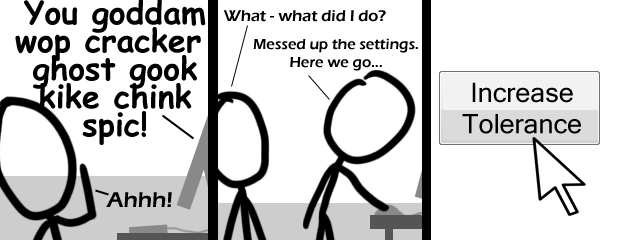

Comic JK 490
When I Feel Like It
⇤
<
?
>
⇥

⇤
<
?
>
⇥
Forum
.
RSS
.
Digg
.
Facebook
.
Reddit
.
Twitter
.
Stumbleupon
Enter your thoughts on number 491 here. Please, no spamming, trolling, phreaking, or pooftahs. Why does google ads now have "Black singles network. Race in America. Make MSN Your Homepage."? WTF DOES MSN SHOW UP THERE! yay now I know two more ethnic slurs What does he put in census forms under 'ethnicity'? I'm picturing an organisational chart with footnotes and references to anthropology journals. Excellent. Eight more swear words that nobody ever thinks to teach to the auto-censors. No nigger? really? Just cause its supposedly 'so much' worse? Lol @ niggers! 10 more 'til the magic 500! >No, it's 512 that's special. So, still 22 to go. >>No. It is 200 that's special. So, still 16 to go. >>>You mean 10 to go. >>>>No... 16 is correct >>>>>lrn2hexidecimal >>>>>>no its 420 thats special its the answer to life the universe and everything times 10 I don't know wop or ghost, who are those? >A wop is what you get from some girl armed with a pillow. A ghost is what you might get should said girl wop you too hard with said pillow. >>The internets is all around you. Use it. >>>if you want to learn what a 'wop' is, just watch The Untouchables. Sean Connery only uses it every other sentence in that movie >>>> Wop (n): Someone who brings a knife to a gunfight. >>>>> No, that's a ghost. >>>>>>whin >>>>>>>Wop: imminent ghost That should be "Wog" not "Wop" Wog, I know (from the fat wog said to the skinny wog). Wop, cracker, ghost, gook and kike are unknown to me. >kike is a jew >>cocaine powder is a gift from the jews >>>"Gook" is used in a couple of M*A*S*H episodes by racist guest characters, though I'm not sure if it's referring to Koreans or East Asians collectively. >>>>Any southeast asian - the Vietnam war was the zenith of this slur >>>>>Wop is italian, Cracker is white, Ghost is black >>>>>>Roses are red >>>>>>Violence is new